成果
郑国东周祭祀遗址编钟是春秋中期的青铜乐器，这一批编钟为二十件钮钟和四件镈钟的编列组合，各组形制及钟悬规则基本一致、铸造规范。为提升郑国编钟展示效果，增加体验交互性，团队对河南博物院郑国编钟进行了扫描重建，配合编钟现场演奏的配音，形成郑国编钟演奏交互系统，这对于沉浸式体验春秋郑国编钟的音乐性能，增加历史文化趣味性具有重要意义。
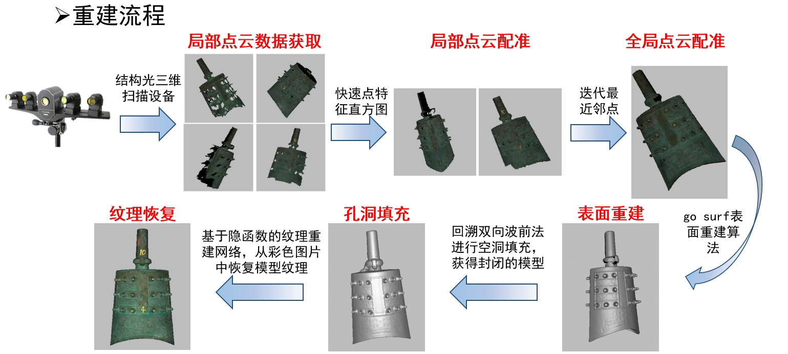
为保证郑国编钟细节的真实质感，团队设计了系统的模型重建流程：通过结构光三维扫描设备，获取郑国编钟的局部点云数据，采用快速点特征直方图并迭代最近邻点的方法，将全局点云配准，运用go surf表面重建算法将编钟表面重建，通过回溯双向波前法填充空洞，获得封闭的模型。基于隐函数的纹理重建网络，从彩色图片中恢复模型纹理，进一步提高郑国编钟模型的还原度、真实感。
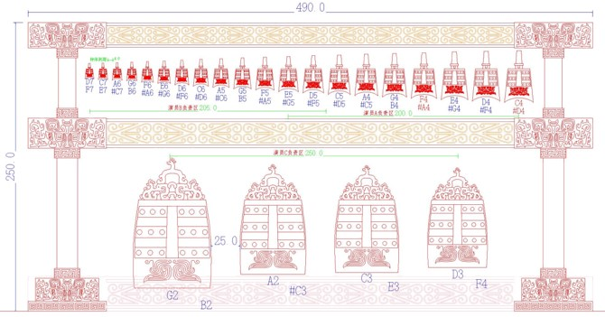
由于编钟存在尺寸过大、漆面反光的问题，团队采用分段扫描拼接、棱面分别贴上美纹纸及棋盘格等标志物，优先保证几何重建。
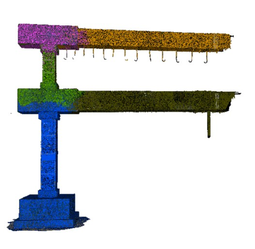
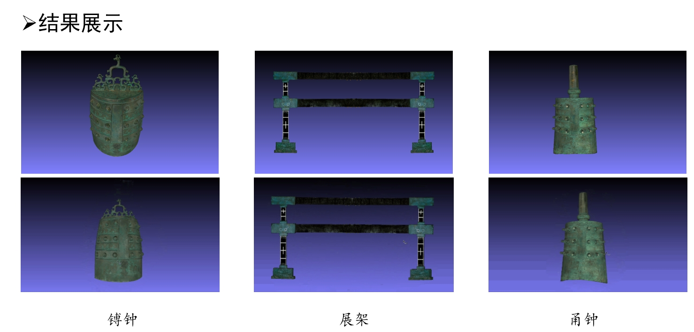
此外，为实现郑国编钟的沉浸式体验效果，团队使用em32高阶话筒进行立体声声音录制，对不同编钟不同力度各录制3遍 由专业演奏老师进行编钟敲击，达到还原真实演奏。
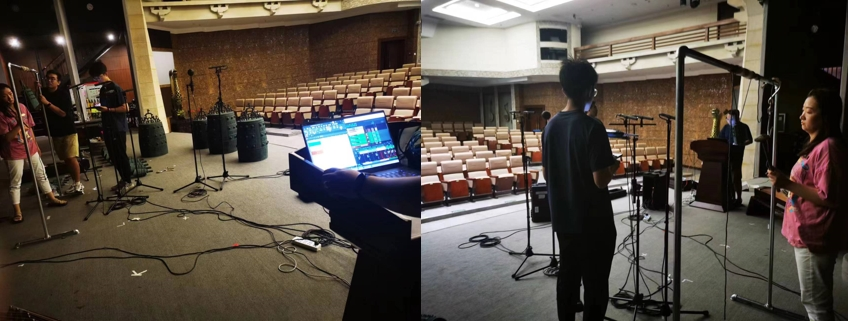
该系统基于南京大学南京大学EE VirtualStar数字人交互试验平台，通过动作捕捉和面部表情捕捉棚对人脸/人体进行高精度的三维采集，运用4D人脸建模和映射系统快速生成数字人形象，结合VR手柄、传统键鼠、语音设备，实现语音、眼动、肢体等多模态交互。
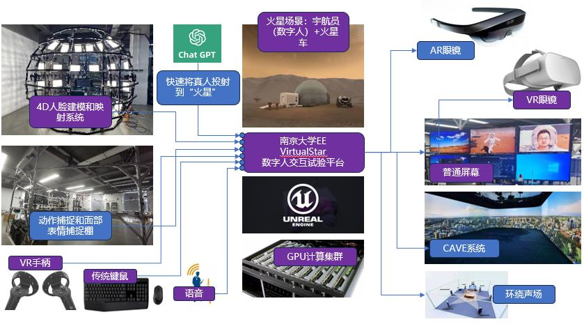
团队设计了宇航员和火星车在火星探索的场景，包含火星表面环境的基本场景信息，火星车自主行驶、宇航员火星行走探险等场景，十分生动。
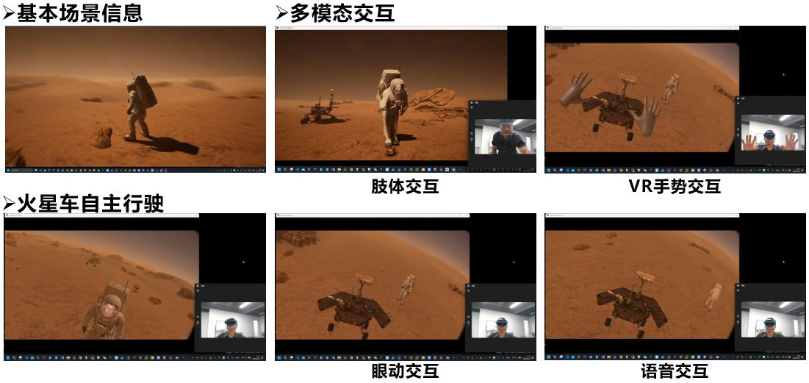
沉浸式体验红色主题文旅是沉浸式文旅的重要一环，实现教育意义重大，同时也具备较大的市场前景。在此方面，团队构建了红色主题老照片修复与红色军服虚拟换衣应用，使用全息舱进行展示。
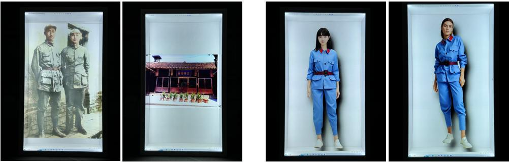
团队首先建设了红色主题数据库，目前涵盖7万余张红色老照片。在此基础上，团队训练了红色主题肖像人物上色模型，形成了老照片修复、上色流程，并最终应用于遵义会议纪念馆素材展示，取得了良好的视觉效果。
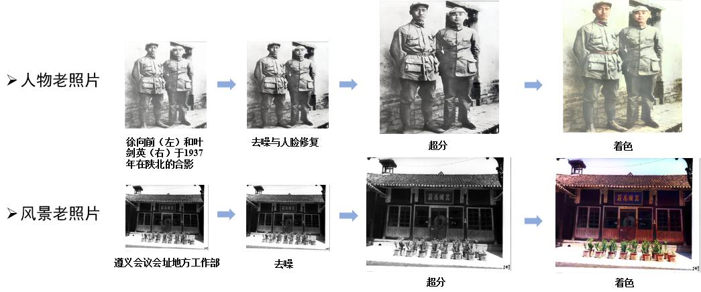
其次，团队创新应用基于条件扩散模型的时装试穿技术，使得服装在预制人体模型上贴合效果最佳，同时用户可选择不同的模型，替换当前用户的头像，实现了虚拟快速变装，应用在红色文旅场景，十分新颖。
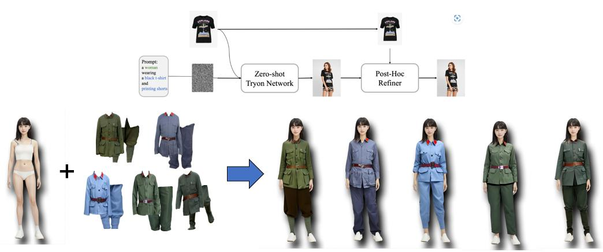
团队将真实古画文物中的元素动画化（肢体运动、水流效果、树枝飘动、底色渐变等），进行2D或裸眼3D呈现；形成了经过预处理与标注人物基本情况的古画数据集约300张。
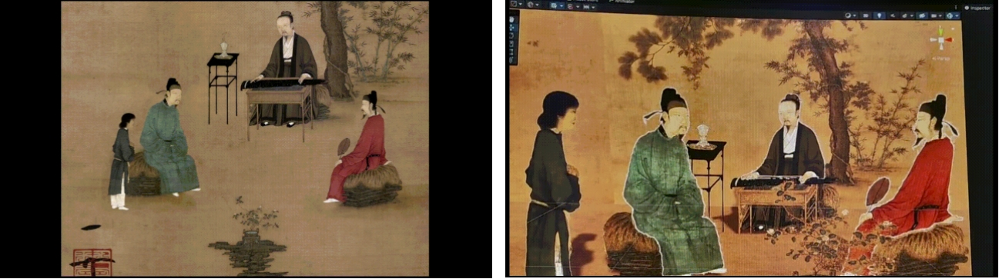
可建设内容：拍摄并实时识别用户动作，古画中的人物做对应预设动作，系统播放对应人声、音乐。
当前，团队已形成基于姿态估计与几何计算的全自动古画人物肢体动图生成方案。未来将建设支持多人移动端制作、云端动图生成以及全息舱显示的古画动画制作服务系统。
团队设计了端云协同支撑的古画人物问答交互系统。通过系统采集并识别用户的提问，结合大模型计算回答，反馈合成古画人物语音，配合古画人物的动图形象，形成古画人物“一问一答”答交互系统，生动形象。
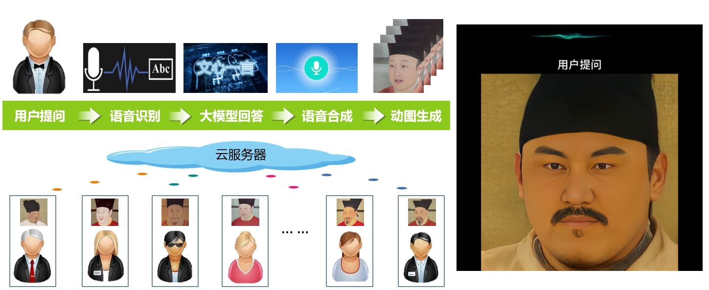
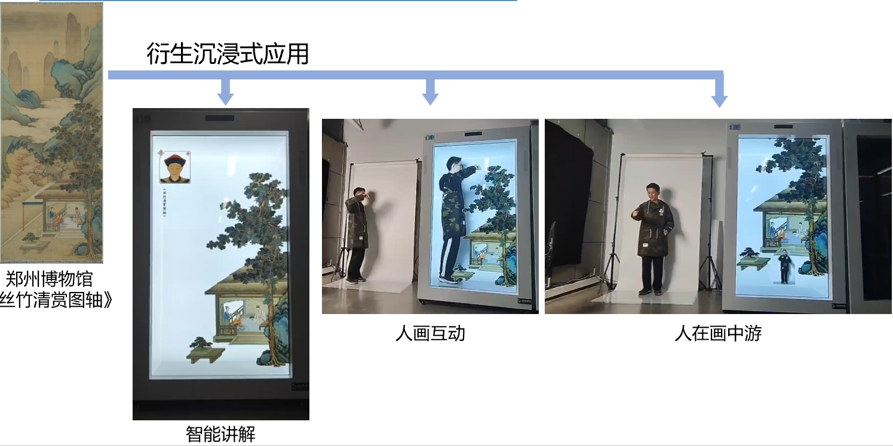
团队打造了沉浸式的人画互动，实现“人在画中游”逼真场景，综合运用超高清视频实时传输与显示、基于语音/文本的古画肖像面部驱动、基于自动化节点绑定的动画合成。实现虚实场景融合、二维动画生成、内容智能驱动等功能，下一步团队正在研究基于二维姿态估计的动作检测、基于区域的识别区域匹配、面向虚实交互显示的渲染优化等内容，进一步提升动作识别交互功能体验。
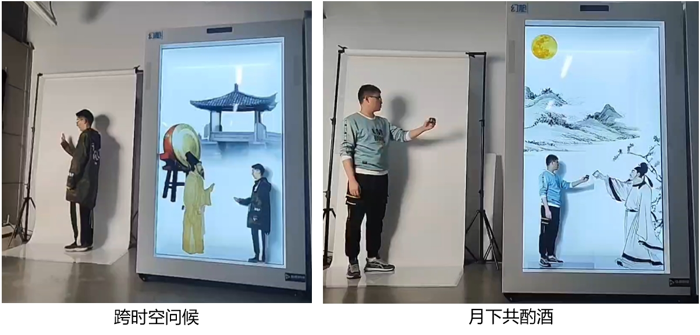
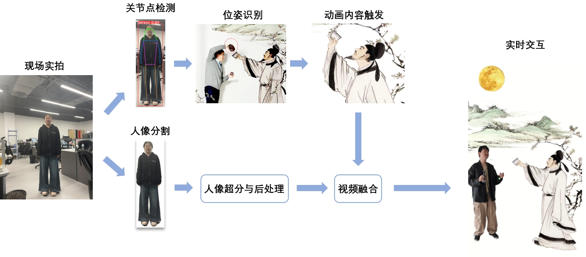
动作识别交互技术路线：实时人像分割、关节点检测、视频超分与融合、沉浸式展示，基于关节点检测与位姿分析的虚实交互与融合。
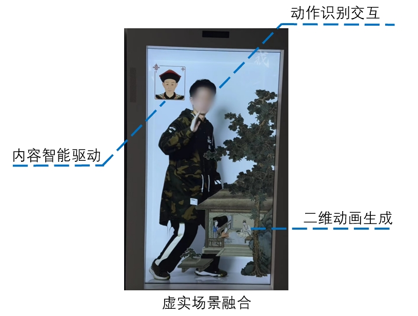
团队设计了3D文物全息展示应用，通过运用面向空间显示设备的渲染优化、基于文本的语音合成、基于文物单视图的纹理生成等技术，实现了虚拟场景渲染、内容智能驱动、模型内容纹理合成。使得文物3D展示更加逼真。下一步团队将继续围绕3D文物全息展示的手势与姿态交互，提升用户体验。
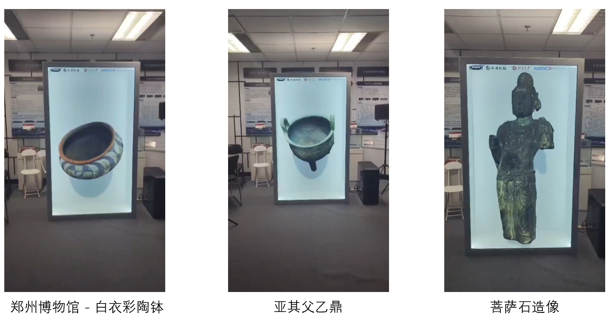
团队建设了可以生成虚拟空间展厅的6DoF VR内容自动化制作平台，应用于宣传、沉浸式参观等场景，支持多种场景、元素的批量自动生成，帮助用户实现自动化制作虚拟交互内容。

技术路线：依托VR内容与展示平台，支持多种内容呈现形式和终端设备。

未来可建设内容：真人点云建模，虚实融合与交互等。
团队与联想研究院合作研发了低成本沉浸式3D视觉通信系统，单用户端仅依靠一块消费级显卡即可获得高视觉质量的3D实时会议体验，目前已进入产品开发环节，是业界首个面向消费级市场的3D会议解决方案与系统。
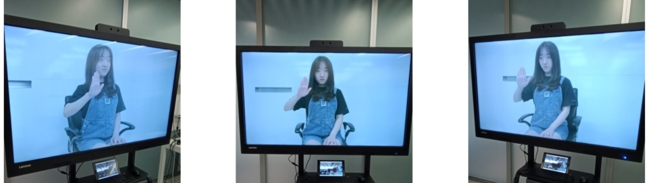
技术路线：多视点视频编码传输、人眼跟踪、实时视点合成、裸眼3D光场屏呈现。
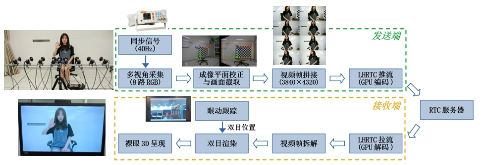
本系统可应用于博物馆文物3D遥现，边远地区或行动不便的用户可在远端以自由视角实时获取讲解员与文物的3D视觉信息，亦可服务于不便出馆文物的远程沉浸式展示。
团队与联想研究院合作研发了低成本沉浸式3D视觉通信系统，单用户端仅依靠一块消费级显卡即可获得高视觉质量的3D实时会议体验，目前已进入产品开发环节，是业界首个面向消费级市场的3D会议解决方案与系统。
技术路线：多视点视频编码传输、人眼跟踪、实时视点合成、裸眼3D光场屏呈现。
本系统可应用于博物馆文物3D遥现，边远地区或行动不便的用户可在远端以自由视角实时获取讲解员与文物的3D视觉信息，亦可服务于不便出馆文物的远程沉浸式展示。